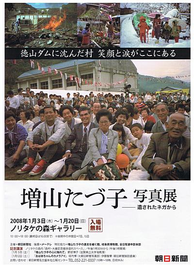
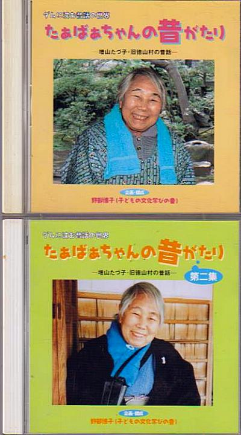
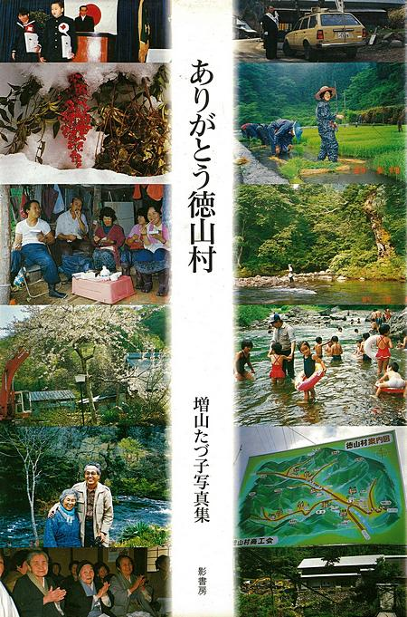
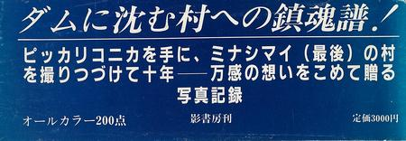
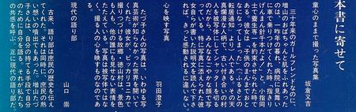
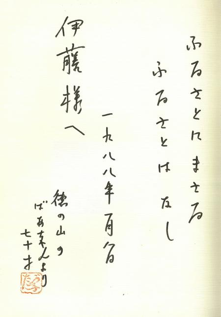
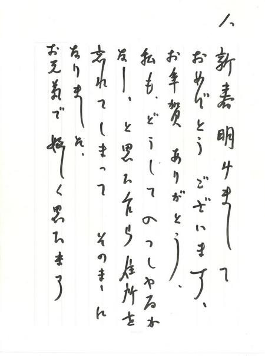
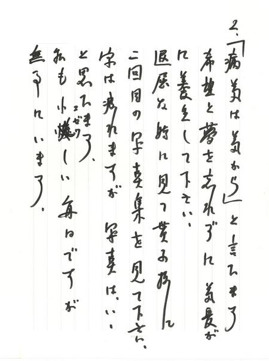
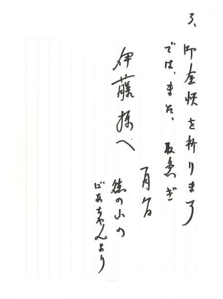

コラム
おばあちゃんの笑顔 ～ 増山たづ子さんを偲んで
増山 たづ子さん（ますやま・たづこ＝農業）７日午後零時５４分、心筋梗塞（こうそく）のため、岐阜市内の病院で死去、８８歳。旧徳山村（現在の揖斐郡揖斐川町）出身。通夜は８日夜、親族や旧村民らが集まり営まれた。葬儀・告別式は９日正午から、岐阜市池ノ上町４の２２の２、ＪＡぎふ島斎場で。喪主は長男好平（こうへい）氏。 「故郷 私の徳山村写真日記」や著書「ありがとう徳山村」なども出版し、社会に勇気と励ましを与えた女性に贈られるエイボン功績賞を受賞した。「カメラばあちゃん」の愛称で知られた。（岐阜新聞Webより引用）
2006年3月7日の朝刊をめくると、社会面のトップに、増山たづ子さん亡くなるの一報があった。慌てて喪服を取り出して着替え、岐阜駅に向かった。駅を降りて斎場のある場所へのバス乗り場を訊く。一度間違えて別の方向へのバスに乗りかかったが、親切な運転手さんのおかげで乗り直せた。バスの座席で揺られながら、忠節橋を渡るときに見えた長良川の流れに、22年前の記憶が鮮やかに蘇って来た。同時に、頬を、涙が止まることなく流れ出した。
あの夏、僕は21歳の大学生。はるばる新潟県の長岡市から国鉄北陸線の夜行、岐阜バス、２系統の旧徳山村村営バスを乗り継いで、増山さんの経営していた旧徳山村の民宿まで、バックパッキングでアマゴ釣りに訪れたのだ。当初の計画では、初日から川原でキャンプする予定だったのだが、折からの大雨で、川は大増水。仕方なく、まず、たづ子おばさんの民宿に顔を出してみることにした。玄関から出てきたたづ子おばさんは、
「こんな大雨の日に、川へ行ってはいかん！」
と、きびしく一喝し、僕を家の中に迎え入れてくれた。その晩は、いろりを囲んでたづ子おばさんの昔話を聞きながら、おいしい手料理をいただいた。
雨は翌日も降り続き、釣りにも行けず、することのない僕は、増山さんちのお隣の、中西さんちの子供たちと絵を描いたりして座敷で遊んでいた。中西さんや奥さんのハナさんとも、僕の故郷の東栄町のことなどを話したりした。揖斐川の源流部に当たる徳山村の流れは、大雨でだいぶ増水し、笹にごりになっていた。
ようやく雨が上がった。僕は、たづ子おばさんが「友だちの木」と呼んでいる古木の根元から流れ出している、小さな沢に入った。そんな小さな流れでアマゴが本当にいるのか不安だったが、流れに降りたすぐそのポイントから、美しいアマゴが飛び出した。掌にのったアマゴの体側には、鮮やかな朱点とパーマークが浮かび、夏の流れの中で、思う存分餌を食べているのが見て取れた。
静かに遡行してゆくと、小さな淵の尻で、ピシャッとしぶきが上がった。
「あっ！ ここに居たかっ！」
胸をときめかせながら、カーボンのテンカラ竿を振り込むと、水面に落ちた粗末な毛鉤めがけて銀色の腹が反転した。尺にわずかに足りないくらいの見事な大アマゴが、僕の竿を満月に引き絞った。その日、僕は７尾のアマゴを釣り、全部水に返してやった。民宿に帰ると、たづ子おばさんが、
「なんだ、手ぶらで帰ってきたか？」
と、カラカラと笑ってくれた。
水も、時も流れ、いま、あの日と同じ岐阜バスに揺られ、斎場へと向かう。池ノ上のバス停で降り、近所の呉服屋さんで斎場の場所を訊く。もうすぐそこで、歩けば５分もかからないと言った。斎場へ着くと、玄関を入った正面に、在りし日のたづ子おばあちゃんのにこやかな笑顔の写真が何点も飾ってあった。トレードマークの水色の手ぬぐいを首に巻き、愛用のピッカリコニカを構える姿は、あの日とまったく変わっていなかった。祭壇の正面には、モノクロで大きく引き伸ばされた遺影が飾ってあり、それを見るとまた涙がこぼれた。ニュージーランドから帰国して、まる３年もあったのに、もう一度会いに訪ねておくべきだった。おばあちゃんのことは気になっていたのだが、ついに生前の顔を拝むことができなかった。それが惜しい。
しかし、なんとかこうしてお弔いに来れたのだから、それだけでも幸せと思うしかない。読経が済み、焼香となった。最前列の焼香台に訪れる人を逐一見ていると、忘れることの無い中西さんの顔があった。大勢の人々の焼香の行列を越え、中西さんの座っている椅子のところまで近づいて行った。
「学生時代にお世話になった伊藤と申します。お懐かしゅうございます」
中西さんは、ちょっと不思議そうな顔をしたが、やがてにっこり微笑まれて言った。
「いやぁ、思い出せないねぇ」
僕は、涙をぽろぽろこぼしながら、奥さんのことやお子さんのことを訊ねた。奥さんは前列に座っているとおっしゃられた。止まらない涙はそのままで、奥さんのハナさんに挨拶すると、立派に成人されたお子さんも隣に座っておられた。本当に懐かしかった。
葬儀は終わり、出棺となった。黒い大きな車を見送り、僕は呆然としたまま人混みの中に立ちつくしていた。しばらくしてからようやく歩き出し、バス停に向かった。バス停には、一人のおばあちゃんがバスを待っており、僕に話しかけてきた。
「どこまで行きなさる？」
「岐阜駅までです。このバスでいいんですよね？」
おばあちゃんはにっこり笑って、
「ああ、いいだよ」
と答えてくれた。
バスが来て、僕たち二人はゆっくりと乗り込んだ。また景色が流れ始め、長良川の堤防の上をバスは岐阜駅目指して走って行く。バスに揺られながら、人の生と死、出会い、別れなどについて、断片的な想いが風景と一緒に僕の頭の中に流れ込んできた。人の一生のわずかな期間の間に、人は誰と出会い、誰と別れるのか。
バスはＪＲ岐阜駅前に着いた。最後に降りた僕に、先に降りて待っていてくれたおばあちゃんが
「気をつけて行きなされよ」
と、また、にっこり笑って声をかけてくれた。その笑顔は、増山たづ子さんが、何冊もの写真集に写し取ってきた、あの素朴でやさしい徳山村のおばあちゃん、おじいちゃんの笑顔のように思えた。ゆっくりと歩き去ってゆくそのおばあちゃんは、たづ子おばあちゃんが最後に会いに来てくれたのかなとも思えた。
一期一会、合掌。
追記：2008年1月3日から20日まで、名古屋市のノリタケの森ギャラリーで開催された、「増山たづ子 写真展 ー 遺されたネガから」を観に行った。

会場の一角で、増山さんが徳山村に伝わる昔話を録音してCD化した「たぁばあちゃんの昔がたり」と同第二集を購入することが出来た。合計で3枚組、増山さんのトレードマークであった水色のタオルを首に掛けたジャケット写真と、詳しいライナーノーツも付いたこれらのCDは、僕の宝物となった。

CDの企画・構成は野部博子氏、収録は1999年から2002年にかけて、岐阜市の増山さん宅で行われたとある。野部氏は、2014年に「増山たづ子 すべて写真になる日まで」という写真集を編集している。
今、懐かしいたづ子ばぁちゃんの声を聴きながらこの追記を書いている。あの徳山村の民宿の囲炉裏端や、銀鱗を光らせたアマゴの姿がありありと浮かんできて、心がポッと暖かくなってくる。
追記２：今週、蔵書の整理をしていた時に、たづ子おばあちゃんの２冊目の写真集を久しぶりに開いてみた。これはじきじきに送って下さった１冊なのである。


{kind=link}

「本書に寄せて」をクリックすると大きな画像が開きます。




「病は気から」と申します。希望と夢を忘れずに、気長に養生して下さい。
と、励ます言葉を書いて下さった。実に有り難いことである。
たづ子おばあちゃんは今頃天国で、とうとう戦地から還ることの出来なかった旦那さんに故郷の写真を見せてあげながら、仲良くおしゃべりを楽しんでおられるだろうか？
コラム 目次へ
サイトマップ
ホームへ
お問い合わせ